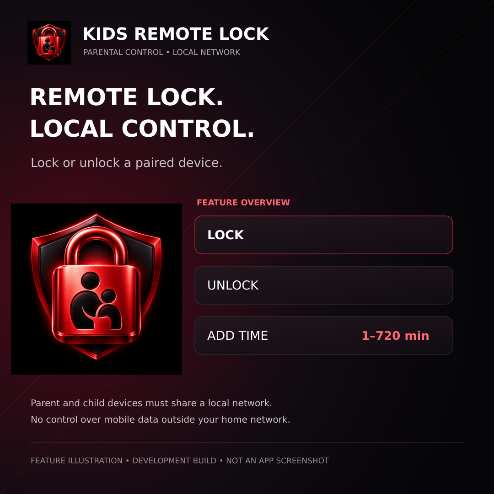

Android
KIDS REMOTE LOCK
子どもの端末を遠隔ロック
準備中のため現在はインストールできません。

主な機能
子どもの端末を遠隔ロック
- 子どもの利用時間制限とスケジュール管理を予定
- 端末とアプリのロック、保護者端末と子どもの端末の連携
対応端末と公開状況
Google Playでの提供状況は国・地域、端末、公開状態によって異なります。
Android
子どもの端末を遠隔ロック
準備中のため現在はインストールできません。

子どもの端末を遠隔ロック
Google Playでの提供状況は国・地域、端末、公開状態によって異なります。